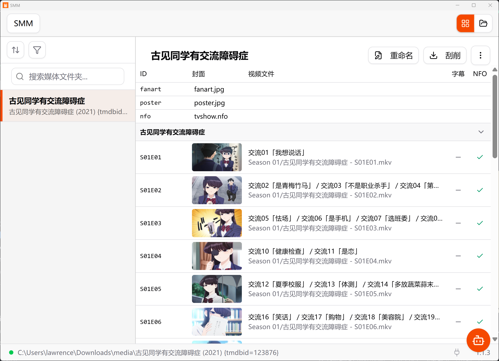

Smart renaming
Rename your files into Plex / Jellyfin / Emby naming conventions in one click — season, episode, title, year and language detected automatically.
Simple Media Manager (SMM) renames, scrapes and converts your movies, TV shows and music — with a clean desktop UI and a built-in AI assistant. Works fully offline on your machine.

From renaming files to fetching metadata and downloading from the web — SMM is a one-stop tool for your local media.
Rename your files into Plex / Jellyfin / Emby naming conventions in one click — season, episode, title, year and language detected automatically.
Fetch posters, fanart and NFO files from TMDB and TVDB so your library looks polished in any media player.
Download videos from YouTube, Bilibili and many more sources directly into your library, powered by yt-dlp.
Convert and remux video / audio with FFmpeg under the hood — fast, reliable, and codec-aware.
Edit titles, episodes, descriptions and other metadata directly in the app — changes are written back as standard NFO files.
Ask the assistant to recognize folders, fix episode mappings or generate summaries — also exposed as an MCP server for other tools.
Transcribe audio and generate subtitle files for your videos with the integrated VideoCaptioner workflow.
A native Electron app for Windows, macOS and Linux — including Windows 11 ARM. Your files never leave your computer.
Grab the latest release for your platform and have a tidy media folder in minutes.
Download SMM